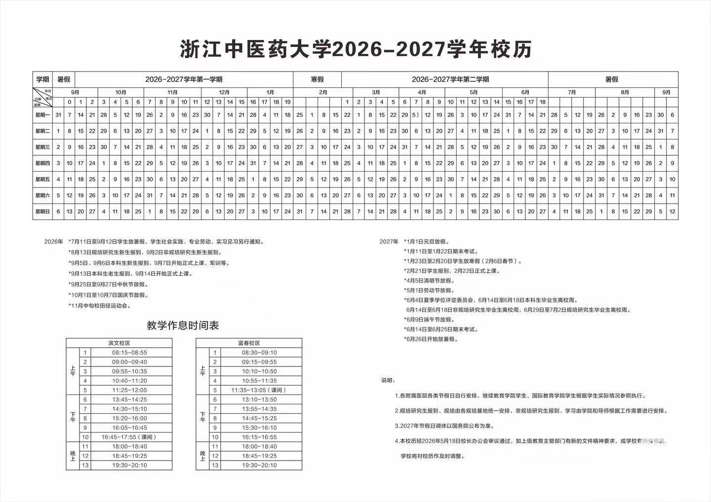

SEMESTER 1
14 ก.ย. 2026 → 10 ม.ค. 2027
เริ่มเรียน 14 ก.ย. 2026 และสิ้นสุดภาคการศึกษาตามปฏิทินมหาวิทยาลัย
ภาพรวมปีการศึกษา 2026–2027 ของ Zhejiang Chinese Medical University พร้อมวันเปิดเรียน วันหยุด สอบ และช่วง Week 1–17 โดยใช้ข้อมูลจากปฏิทินที่คุณแนบมา

เริ่มเรียน 14 ก.ย. 2026 และสิ้นสุดภาคการศึกษาตามปฏิทินมหาวิทยาลัย
ภาคเรียนที่ 2 ตามปฏิทินปีการศึกษา 2026–2027
—
| WEEK | ช่วงวันที่ | สถานะ |
|---|